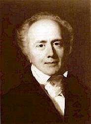

|
|
【懇求聖靈聽我求】 |
|
1 Spirit divine, inspire our prayer 2 Come as the light; reveal our need, 3 Come as the fire and cleanse our hearts 4 Come as the dove and spread your wings, |
懇求聖靈聽我求， |
|
Spirit divine, inspire our prayer
|
|
|
|
|


https://youtu.be/mqRWqV0LE4U - Spirit Divine Attend Our Prayers
https://youtu.be/fvk0Qp_Y1Ro Tune: Spirit Divine -
Spirit Divine Attend Our Prayers - Christian Hymn & Spiritual Song Lyrics
with Orchestral backing music.
https://youtu.be/UvIc9MzQgQU Tune: Holy Cross - "Spirit Divine Attend Our Prayers" by Melharmonic Virtual
Choir directed by Chibuike N. Onyesoh
https://youtu.be/E7j3vHH9zfY
0617 Spirit Divine, Inspire Our Prayer
Hymn Information
Hymn Story/Background
Author Information

entered that profession until he felt a call to the ministry. Educated at Hackney College, London, he became a Congregational minister in 1811. He served a flourishing congregation in St. George's-in-the-East, London (later named Wycliffe Chapel), until his retirement in 1861. Known for his administrative skills, Reed founded various charitable institutions such as the London Orphan Asylum, the Asylum for Fatherless Children, the Royal Hospital for Incurables, the Infant Orphan Asylum, and the Asylum for Idiots. He published a Supplement (1817) to Isaac Watts' hymns, which was enlarged in 1825 and called The Hymn Book; it included twenty-one hymn texts by Reed and twenty anonymous texts by Reed's wife (not properly credited until the Wycliffe Chapel Supplement of 1872). In 1842 Reed issued The Hymn Book, a compilation of his hymns as well as those by Watts and others.
Composer Information
| Short Name: | Bill Wolaver |
| Full Name: | Wolaver, Bill, 1958- |
| Birth Year: | 1958 |
Wolaver, Bill Robert; b. 2-3-1958, Oklahoma City, OK; piano, composer editor
Tune Information
| Title: | [Spirit Divine, hear our prayer] |
| Composer: | Bill Wolaver |
| Key: | F Major |
| Copyright: | © Copyright 1986 WORD MUSIC (a div. of WORD, INC.) |
Scripture References
Thematically related:
- st. 1 = ·
- st. 2 =
- st. 3 = · ·
Further Reflections on Scripture References
The text begins with a prayer for the working of the Holy Spirit in our hearts (st. 1). It then uses the metaphors of light, fire, and the dove to enable us to see the Spirit's work more clearly: "Come as the light" is a prayer for illumination (st. 2); "Come as the fire" is a prayer for cleansing (st. 3); and "Come as the dove" is a prayer for peace and unity (st. 4).
Bert Polman, Psalter Hymnal Handbook
Confessions and Statements of Faith References
Further Reflections on Confessions and Statements of Faith References
Since it is uniquely the work and passion of the Holy Spirit, who is “our Sanctifier by living in our hearts” (Belgic Confession, Article 9) and “by the work of the Holy Spirit [God] regenerates us and makes us new creatures, causing us to live new life and freeing us from the slavery of sin” (Belgic Confession, Article 24), we plead for his power to continue this work. The Holy Spirit restores us into God’s image “so that with our whole lives we may show that we are thankful to God for his benefits, so that he may be praised through us...” (Heidelberg Catechism, Lord’s Day 32, Question and Answer 86). We come to know, therefore, that our growth in holy living will not occur without the Holy Spirit’s ministry.